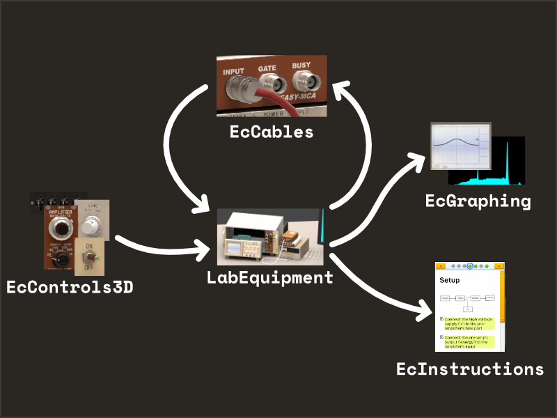

nuclear engineering
virtual education
Built in Unity. Mostly solo project - responsible for nearly all artwork and programming.


tl;dr
This is an educational virtual lab project where I'm responsible for nearly all visuals and programming. I built the lab on Unity and created most of the visuals with Blender, Marmoset Toolbag, and Substance Painter. The project was led by Purdue University Prof. Stylianos Chatzidakis to increase access to curriculum-necessary lab equipment.
3D artwork
These models are tightly integrated into the program since I am also responsible for the Unity project. Some examples:
- The models have less texel density on faces that I know are mostly obscured or unseen.
- I wrote the line graph & histogram shaders and prepared the equipment models to use them.
- Some non-static objects cast custom soft-shadow decals.
- I created specific reflections cubemaps for many non-static objects to prevent incorrect specular highlights.
- Lighting is baked directly into equipment textures since I know each only appears once.

These virtual tools are close matches to their real counterparts. After learning with this virtual lab, a student should easily be able to use the real equipment. I made several visits to the lab while working on these assets to use the real equipment myself and record plenty of reference material.

The lab runs in a browser and is optimized for low-spec devices such as Chromebooks and tablets. There are max 25,000 triangles rendered across 22 draw events. The lab's load size is just under 50mb.

programming

Built on Unity, I'm responsible for most of this project's scripting. This includes the UI, 3D equipment controls, object manipulation, cable management, camera framing, and data graphing. Like the 3D artwork, everything is profiled and optimized for low-spec devices.
I built systems in separate assemblies so that I could re-use them in other virtual lab projects. These individual assemblies have come in handy on several other projects. UnityEvents suffice to glue these together without becoming unwieldy as this project is relatively small.
Building good UX around equipment's 3D controls was a challenge.
Supporting a variety of devices means supporting a variety of aspect ratios. I built a camera system for 'frames' that the user can navigate between. Frames position the camera so that anything within the frame is always visible regardless of aspect ratio.
The controls also must be large enough for the user to easily interact with them, so the different camera frames are arranged to keep these controls at sane sizes. The equipment is also arranged to keep related frames and controls within reach of one another.

Running on web-assembly, the lab must run on a single thread and cannot leverage Unity's Burst compiler. Optimizing for speed and avoiding allocations & garbage was crucial for the large amount of generated and sampled data. While performance is more than acceptable, I'll likely re-implement the signal processing code in shaders for future lab extensions.

The only scripting that I wasn't entirely responsible for was the equipment signal processing code. I collaborated with Prof. Chatzidakis and his team to model this equipment as I am neither an electrical engineer nor one of his nuclear engineering students. I also wasn't responsible for the cable dynamics, as these are done with Obi Rope.
Completed late 2023